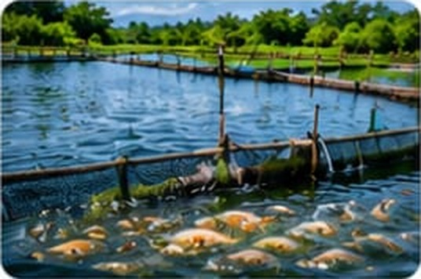
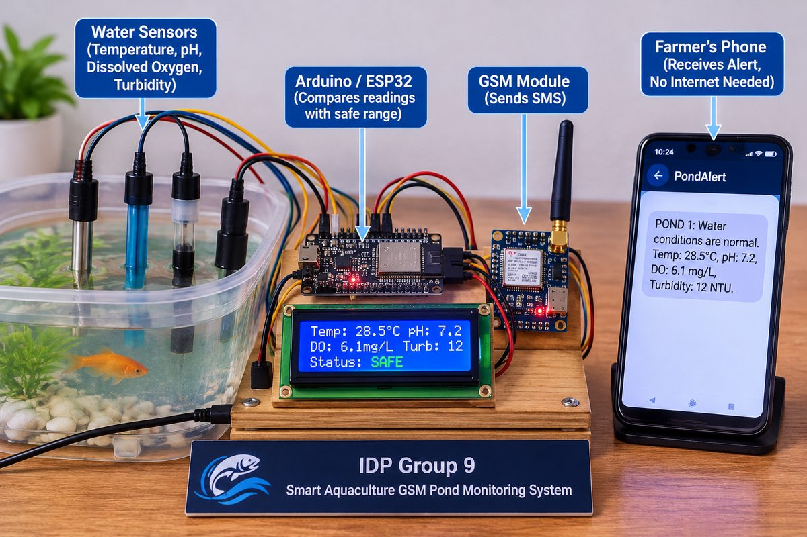
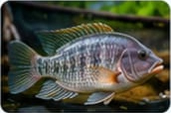

MAJIMI JEFFERY JACOB
Team Leader
Our project provides an affordable, real-time water quality monitoring and early warning system for small-scale fish farmers using simple sensors and GSM technology.

Many small-scale fish farmers in Nigeria lose money when fish die due to poor water-quality monitoring. Harmful changes in pond conditions often go undetected until it's too late.
We provide a simple, affordable system that monitors key water quality parameters and sends instant SMS alerts to the farmer's phone when something goes wrong.
Sensors measure the water quality, the controller processes the data, and the GSM module sends an SMS alert when conditions are unsafe.
Measure temperature, pH, dissolved oxygen and turbidity in real time.
Processes the data and checks for unsafe levels.
Sends SMS alerts instantly.
Receives alert and takes action early.
Our system tracks important water quality parameters to keep your fish healthy and your business profitable.
Arduino or ESP32 board that reads the sensors and decides when a reading is unsafe.
Temperature, pH, dissolved oxygen and turbidity probes placed in the pond.
Sends SMS alerts over the mobile network, so no internet connection is needed.
Solar panel with battery backup so the unit keeps running on the farm.

☀ A solar panel with battery backup powers the controller, sensors and GSM module.
| Parameter | Safe range | Why it matters for the fish |
|---|---|---|
| Temperature | 24–32 °C | Affects feeding, growth and how much oxygen the water holds. |
| pH | 6.5–8.5 | Values outside this range stress or harm the fish. |
| Dissolved oxygen | above 5 mg/L | Low oxygen is the fastest way to lose fish overnight. |
| Turbidity | 0–25 NTU | Cloudy water can signal pollution or too much feed. |
When any reading leaves its safe range, the controller sends an SMS alert to the farmer's phone.

Early detection of poor water conditions reduces fish loss, lowers costs and helps small-scale farmers sustain their livelihoods and feed their communities.
We are a team of NSUK students working on an innovative solution to support local fish farmers through technology and practical engineering.
Meet the Team →Team Leader
Member
Member
Member
Member
Member
Member
Member
Member
Member
Department of [COMPUTER SCIENCE], Nasarawa State University, Keffi (NSUK). Supervised by [PROF. HAJJAH RASHIDAH].
Are you a fish farmer, researcher or supporter? Send us a message and we'll get back to you.
⚲ NSUK, Nasarawa State